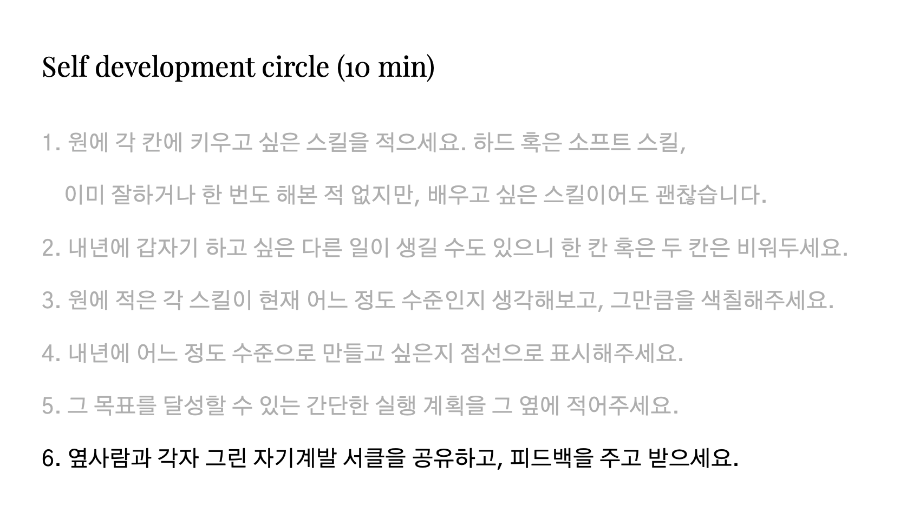
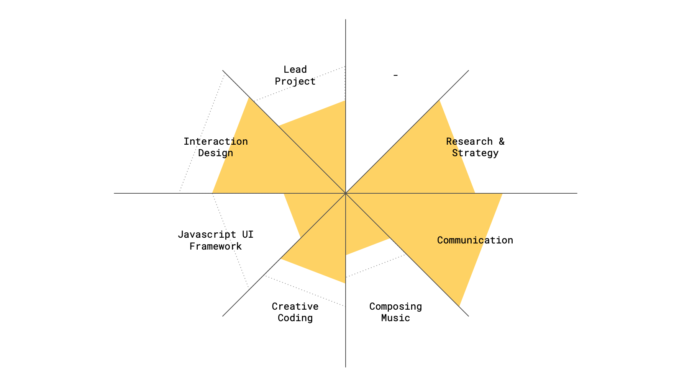

- Check in
- _____ of the year
- History map
- Reflection
Coffee break
- Theme of the next year
- Self development circle
- Check out
Self development circle


- 원에 각 칸에 키우고 싶은 스킬을 적으세요. 하드 혹은 소프트 스킬,이미 잘하거나 한 번도 해본 적 없지만, 배우고 싶은 스킬이어도 괜찮습니다.
- 내년에 갑자기 하고 싶은 다른 일이 생길 수도 있으니 한 칸 혹은 두 칸은 비워두세요.
- 원에 적은 각 스킬이 현재 어느 정도 수준인지 생각해보고, 그만큼을 색칠해주세요.
- 내년에 어느 정도 수준으로 만들고 싶은지 점선으로 표시해주세요.
- 그 목표를 달성할 수 있는 간단한 실행 계획을 그 옆에 적어주세요.
- 옆사람과 각자 그린 자기계발 서클을 공유하고, 피드백을 주고 받으세요.